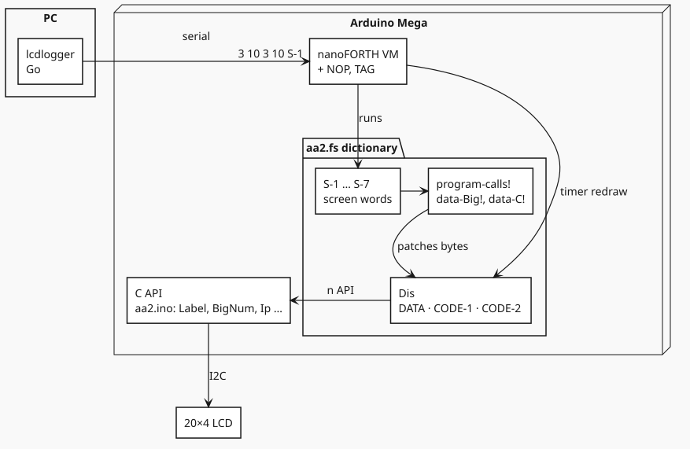

- Role
- Author
- When
- Jan–Feb 2025; replaced by C++ in Mar–Apr 2025
- Stack
- nanoFORTH (patched VM), Arduino C++, Go
- Links
- MonoTempo archives · AA2 repository · nanoFORTH
What it is
The Arduino ran nanoFORTH (© 2021 chochain, MIT) and the PC talked to it over serial. In the second version, Dis is compiled with holes in it: 16 bytes of NOP for data and two code buffers of call slots. A timer runs Dis over and over. The screen words S-1 … S-7 never draw anything; they patch Dis.
- Data is stored as code. nanoFORTH has no data segment inside a word, so values are written as instructions that push them:
BF(LIT) and a 16-bit value, plus a magnitude byte for counts like 10K. - Calls are patched in.
program-calls!writesC000 | addressinto the slots, pointing at the drawing word each screen needs. - The fixed parts stay fixed. The device name, the connectivity footer and the final draw are compiled once and never touched.
Code overview
The PC sends one Forth phrase per update; everything else happens inside the Arduino's 1 KB dictionary. The Forth snippets are from AA2-main; the Go side is from AA2-final, the first version that called the screen words directly.

diagrams/aa2-forth.puml).The Go host
Each update is one line, wrapped in 0 TME / 1 TME so the timer never draws a half-patched Dis.
func (display *SerialDisplay) DrawScreen(code string) {
display.Forth.Send("0 TME")
display.Forth.Send(code)
display.Forth.Send("1 TME")
}
func (display *SerialDisplay) ScreenTags(tags, tagsUnicas ForthNumber) {
display.DrawScreen(
fmt.Sprintf(
"%d %d %d %d S-1",
tags.Value, tags.Magnitude,
tagsUnicas.Value, tagsUnicas.Magnitude,
),
)
}Screen words
S-1 writes its arguments into DATA as push instructions, then patches the two calls it needs into each code buffer.
\ Data for 1-CODE
\ we reserve the two LAST rows for that data.
( LABEL: REGIST. )
( value ) $02
( index ) $0C
data-C!
( LITERAL: Tags[bfvvv1m1] )
( value ) ( m2 vvv2 m1 vvv1 )
( index ) $02
( align ) ( 4 )
data-Big!
\ Data for 2-CODE
\ we reserve the two FIRST rows for that data
( LABEL: ATLETAS )
( value ) $01
( index ) $04
data-C!
( LITERAL: Atletas[bfvvv2m2] )
( value ) ( m2 vvv2 )
( index ) $00
( align ) ( 4 )
data-Big!
addr-Label
addr-BigNum 1-CODE program-calls!
addr-Label
addr-BigNum 2-CODE program-calls!
;Patching a call
A call in nanoFORTH is C000 | address, two bytes. program-calls! writes two of them into a code buffer.
: prepare-call ( word-addr target-addr -- ; this function is specific to the [encode-]call! functions )
>R ( word-addr target-addr ; puts target-addr in a pokeball )
$C000 OR ( word-addr call-opcode ; creates a call instruction, C000 | Address )
R> ( call-instruction ; goes like "target-addr, i choose you!" )
;: program-calls! ( addr-W1 addr-W2 n-CODE -- ; programs the passed words into the specified CODE section )
DUP >R >R ( addr-W1 addr-W2 n-CODE -- addr-W1 addr-W2 ; puts n-CODE in the return stack for 2 uses )
1 R> call-idx! ( addr-W1 addr-W2 ; programs W2 to n-CODE index 1 )
0 R> call-idx! ( addr-W1 ; programs W1 to n-CODE index 0 )
;Dis
The word that gets rewritten: 16 NOPs for data, the fixed header, two tagged buffers, the footer and the draw call. Below it, a dump read back from the device after 3 10 3 10 S-1.
#_4 #_4 #_4 #_4 ( COMPILE TIME: data-end-addr ; 16 byte data buffer )
0 Label ( label-id ; Main label, shows device name )
VERSION Number ( device-version )
Forward
#4 Forward ( COMPILE TIME: tagged-addr )
#4 Forward ( COMPILE TIME: tagged-addr tagged-addr-2 )
3 Label NOP ( label-id ; Main label #2, shows device connectivity )
0 Value ( value-id )
Forward
0 API ( 0 ; C-Api call #0: Draw screen )
; \ DMP should look something like this ( let m2 = 3, m2 = 10, m1 = 3, and m1 = 10 )
\ 15:40:40.516 -> 080: 3820bf00 0a0301bb bbbbbf00 0a0302bb 8 ?____;;;?____;
\ 15:40:40.516 -> 090: bbbb00c0 05c079c0 1dc00dc0 05c015c0 ;;_@_@y@_@_@_@_@
\ 15:40:40.516 -> 0a0: 0dc005c0 15c00d03 c005bb00 c025c00d _@_@_@__@_;_@%@_
\ 15:40:40.516 -> 0b0: 00b480The patched VM
nanoFORTH got two extra words. TAG pushes its own address while compiling, which is how aa2.fs finds the slots to patch.
case TKN_EXTRA: ///>> we only have 2 extra words!
tmp += I_EXTRA;
ENC8(here, PRM_OPS | (U8)tmp);
if (tmp==I_TAG) *(--vm.sp) = (S16)(p0-dic); // PUSH
break;The C API
The sketch only ships a few drawing primitives. BigNum pops a magnitude and a value and prints things like 10K.
void
print_forthNumber()
{
int mag, v;
char postfix;
mag = n4_pop();
v = n4_pop();
postfix = (mag == 0) ?
' ' :
(mag >= 3 && mag < 6 ? 'K' : 'M');
// 'X' if Magnitude = 0, 'XK' if 6 > Magnitude >= 3
// 'XM' if Magnitude >= 6
g_x += virt_scr_sprintf("%d%c", v, postfix);
}
voidHistory
- Jan 2025AA2-retro. The PC drives a nanoFORTH REPL: every frame is a short Forth phrase that builds the screen, and every button poll is a round trip through the interpreter.
- Feb 2025AA2-main. The screen logic moves onto the device as the self-modifying
Dis. A Vim script shortens names to fit nanoFORTH's 3-character limit, and the VM gets two new words,NOPandTAG. - 24 Feb 2025AA2-final. Go sends one line per update, like
3 10 3 10 S-1; the Arduino handles button navigation itself, and modal screens freezeDisby patchingEXITover its first byte. - Mar–Apr 2025The Arduino is rewritten in plain C++, and the link becomes checksummed data frames. That is the version in production until Feb 2026.
Pictures